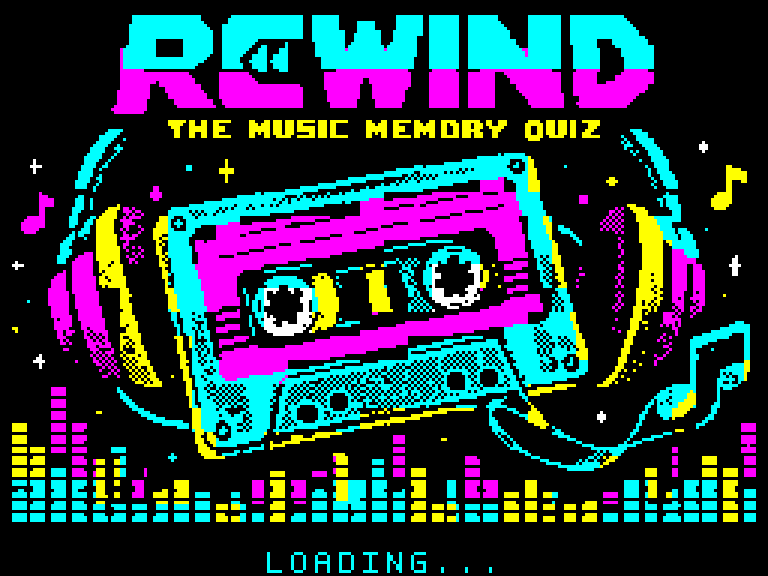
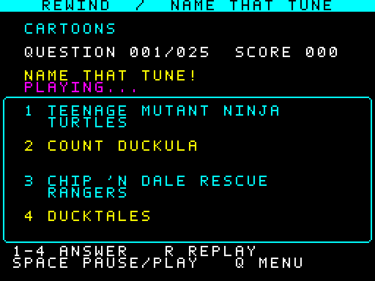
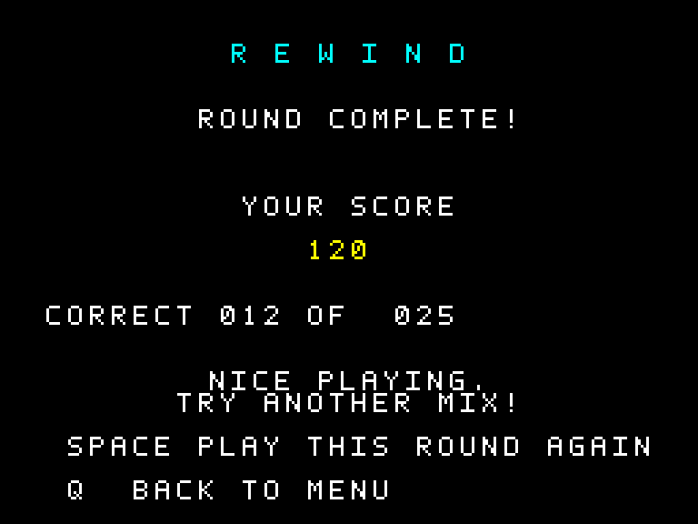

01 / NORMAL
25 tunes. A fresh selection.
Take on 25 different songs chosen at random from the full collection. Score up to 250 points.
ZX Spectrum 128K · Music trivia
The Music Memory Quiz
You know the tune. Can you name it?
Rediscover familiar melodies through the sound of the Spectrum. Fifty AY arrangements. Ten categories. A different mix every time.
For ZX Spectrum 128K PAL hardware or a compatible emulator.

A quick session or the full collection? Every round starts with a fresh shuffle, with no repeated songs.
Take on 25 different songs chosen at random from the full collection. Score up to 250 points.
Test your memory across every category in a new random order. Score up to 500 points.
Four answers, one familiar tune. Replay whenever you like — there is no time limit.


Getting started
LOAD "", or open the SNA snapshot directly.The menu is silent. Music starts with the quiz.
| 1–4 | Choose your answer |
|---|---|
| R | Replay the music |
| Space | Pause/resume; continue after answering |
| Q | Return to the menu |
On the results screen, Space starts a new round in the same mode.
The game
Download the game for your Spectrum or emulator. Source code and build instructions are available on GitHub.
Downloads since 31 Oct 2026: … · Download statistics
File downloads across all formats; not unique players.